Why agentic AI?
Part 1: Getting started
About this lecture
Teachers and researchers spend a large part of every week on chores that are not their real work: cleaning spreadsheets, redrawing figures, reading through stacks of PDFs, building course pages. A coding agent is a language model that can work in a folder on your computer: it reads your files, runs commands, checks its own output and leaves files you keep. This lecture shows what that looks like and why it changes what you can get done.
- A chat window gives you text to copy and paste. An agent works on your actual files.
- Every agent runs the same loop: goal, plan, act with tools, look at the result, repeat.
- Claude Code (Anthropic) and Codex (OpenAI) are two tools built on this idea. The course teaches both.
- Your role changes: you describe the task and judge the result. Your field knowledge matters more, not less.
This is a motivation unit: no installation yet. Installing comes in Accounts and installation; how the model works inside comes in How LLMs and agents work, and how they fail.
You already have a pile of chores that are not “write a paragraph”
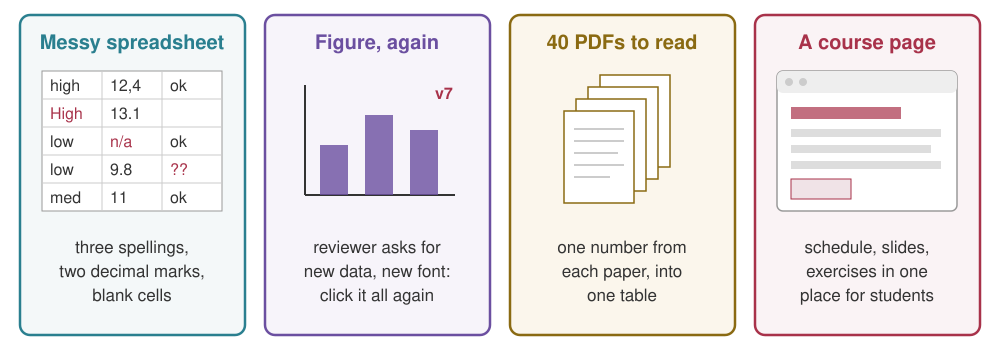
- A spreadsheet from three students, typed three ways. A figure you rebuild by hand for each revision.
- Forty PDFs, each holding one number you need. A course page that never gets made.
A chat window gives you text; an agent leaves you files
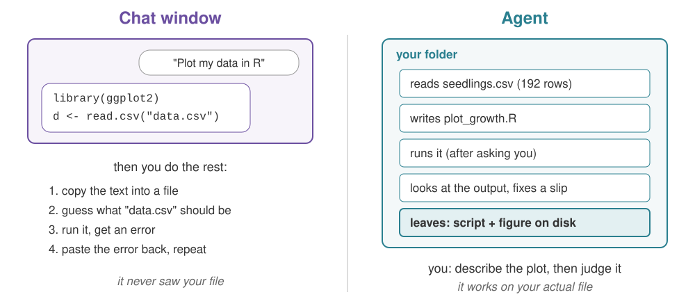
An agent is a language model that can act in a folder on your computer
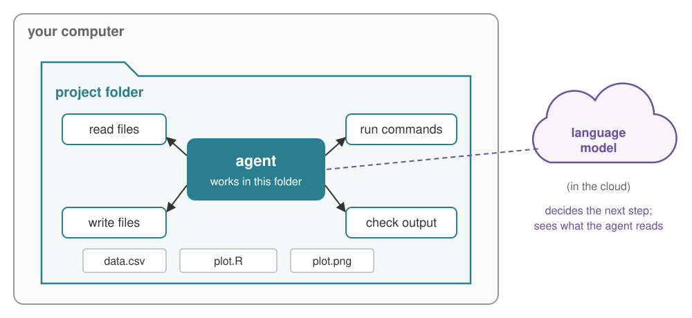
- The model (in the cloud) decides the next step. The agent program (on your computer) carries it out.
- It has a small set of tools: read files, write files, run commands, look at the output.
The difference is where the work happens and what is left afterwards
| Chat window | Coding agent | |
|---|---|---|
| Sees your files | Only what you paste in | Reads them in your folder |
| Runs things | No (or in a hidden sandbox) | Runs commands on your computer, within limits you set |
| Checks its own output | Only if you paste it back | Looks at errors, outputs and files itself |
| What you get | Text in a browser tab | Files on disk: scripts, figures, tables, pages |
| Rerun next month | Ask again, get a different answer | Run the same script again |
| Your job | Copy, paste, run, debug | Describe the task, approve steps, judge the result |
The live build starts from a folder with one CSV file
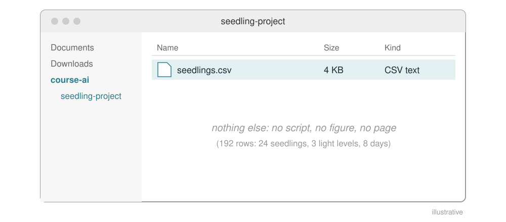
- Synthetic data: 24 pea seedlings, three light levels, height measured every second day.
- Goal: a plot, then a small web page, then a literature table. Three prompts.
You describe the result in plain words; the agent looks at the file first
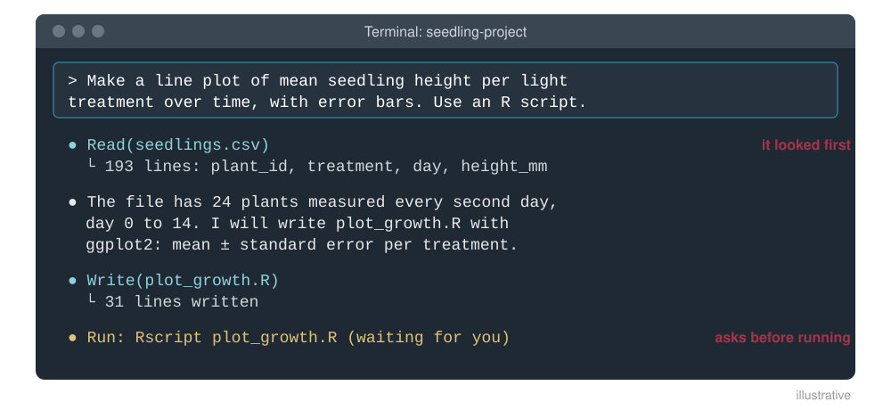
The agent asks before it runs anything, and you can say no
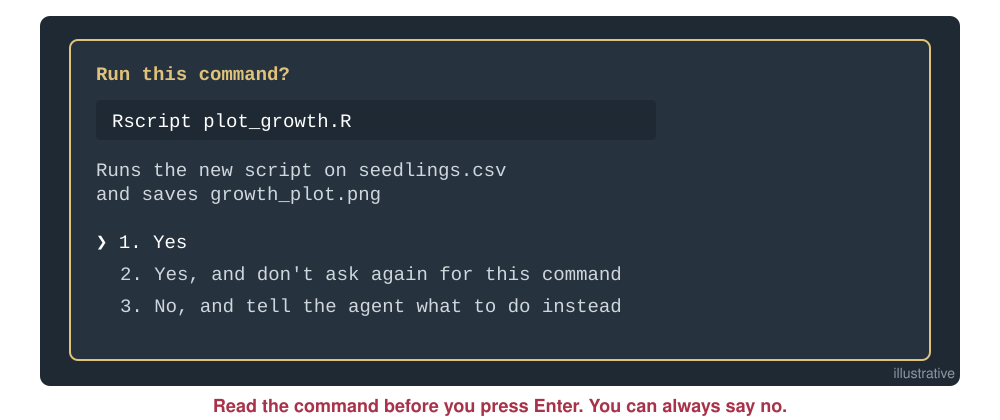
- You set the limits; the agent asks at the edge of them. Claude Code asks before commands like this by default. Codex by default works freely inside the project folder and asks before going outside it (other folders, the internet).
- Read the command first. Terminal survival kit teaches you to read these and to set the limits.
Step 1 gives you a script and a figure, both on disk

plot_growth.R: about 30 lines you can open, read and rerun.growth_plot.png: made by the script, not drawn by hand.- The agent reported: “16 rows used the label High instead of high; I merged them. One measurement (m03, day 10) is missing and was left out.”
When the data change, you rerun the script, not the conversation
> The students added day 16. Update the plot.- The agent reruns
plot_growth.Ron the new file. Same code, same style, new figure. - Next year’s class: copy the folder, swap the CSV, rerun.
- This is the difference between a result and a reproducible result. Reproducible figures (Part 2) builds on it.
Step 2: the same folder becomes a small web page
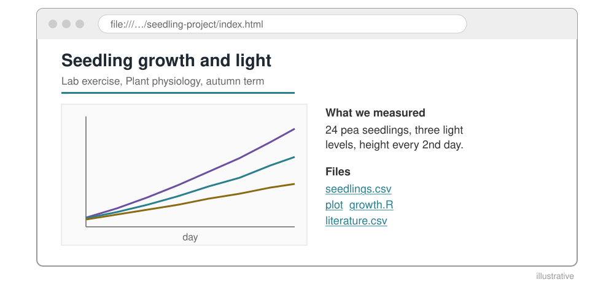
> Make a simple one-page website (index.html) that shows the plot,
explains the experiment in three sentences, and links to the files.Step 3: a literature table is fast to make and slow to trust
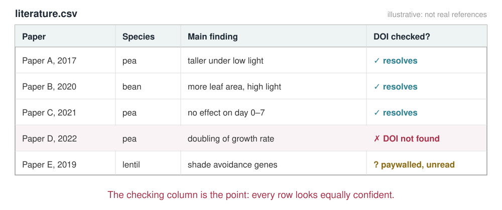
> Find five papers on light intensity and seedling growth in legumes.
Make literature.csv with paper, species, main finding and DOI. Check that each DOI exists.After a few prompts the folder holds files you can keep
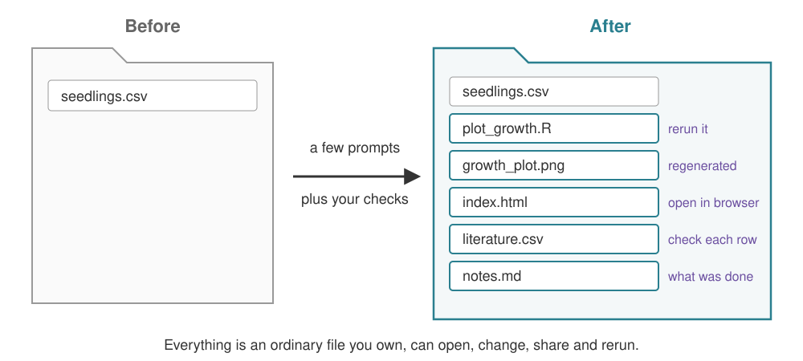
Your own session will look different, and that is normal
- Agents are not deterministic: the same prompt gives a slightly different script, wording or order of steps each time.
- Tools change monthly: screens, menus and options move.
- What stays the same: the agent reads, plans, acts, checks, reports, and you judge.
- So we teach habits (describe, approve, check), not keystrokes.
Every agent runs the same loop: goal, plan, act, look, repeat
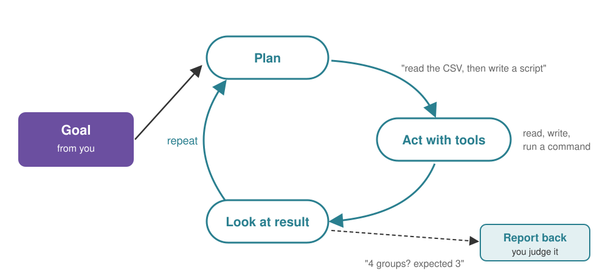
The loop lets the agent catch some of its own mistakes
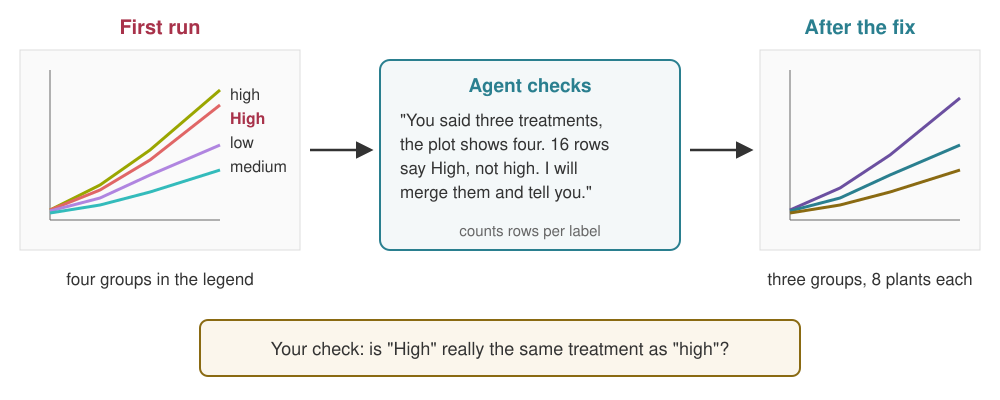
The tools are ordinary actions you could do yourself, only faster
| Tool | What it does | Seedling example |
|---|---|---|
| Read | Opens a file and looks at its contents | Reads seedlings.csv, sees four columns |
| Write / edit | Creates or changes a file | Writes plot_growth.R, later fixes one line |
| Run a command | Runs a program in the folder | Rscript plot_growth.R |
| Search | Finds files, or searches the web if allowed | Looks up DOIs for the literature table |
| Ask you | Stops for permission or a question | “Run this command?” |
There is no magic step: every action is visible on screen and most can be undone.
In teaching, agents take over the file work around a course
- Turn last year’s slides and notes into a course page with schedule and reading list.
- Make exercise variants with answer keys from one template, and check each key by running it.
- Clean and merge lab report data from a whole class into one table and one class figure.
- Build a small interactive demo that shows one concept from your field.
- Collect course evaluation answers into a summary with the original quotes attached.
You still decide what students should learn and whether the material is correct.
The same pattern shows up in every faculty
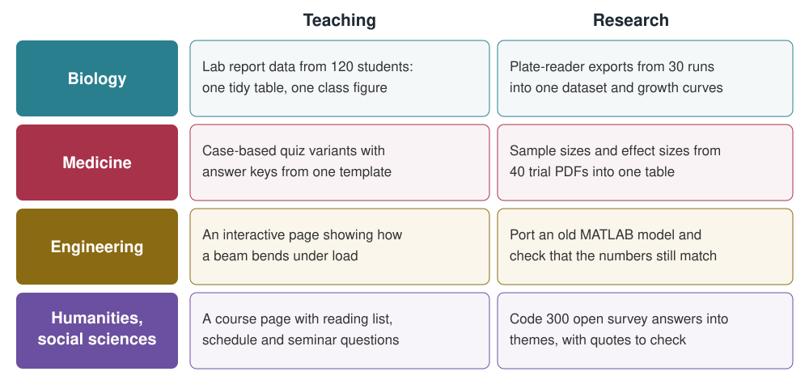
Some chores are poor candidates for an agent, and that is fine
- The judgement is the job. Grading a thesis, deciding a hiring case, reviewing a manuscript.
- You cannot check the result. If you could not tell a right answer from a wrong one, neither can anyone else in the room.
- The data may not leave your institution. Patient records, student grades, personnel files.
- It is quicker by hand. Fixing one typo does not need an agent.
Choose chores by two questions: can I check it, and may I share the data?
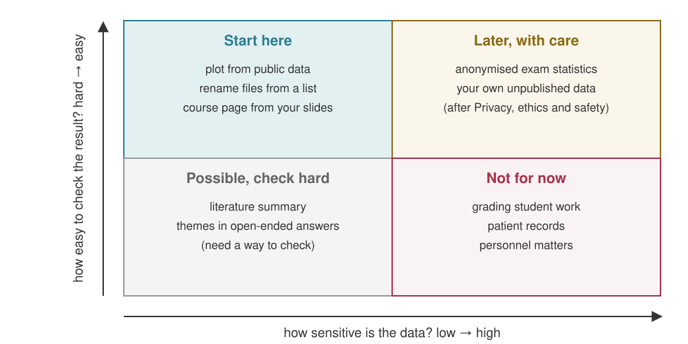
Claude Code and Codex are two versions of the same idea
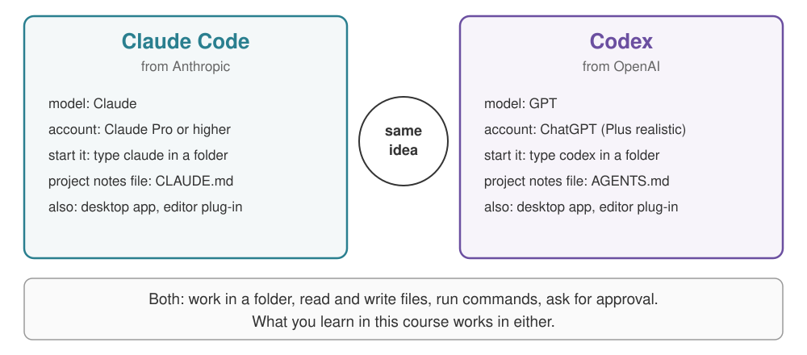
The course teaches both, and what you learn transfers
| Claude Code | Codex | |
|---|---|---|
| Made by | Anthropic | OpenAI |
| Start it in a folder | claude |
codex |
| Project notes file | CLAUDE.md |
AGENTS.md |
| Account | Claude Pro or higher (or API billing) | Any ChatGPT plan; Plus or higher is realistic |
- You can do almost the whole course with one of them. Where they differ, every exercise has a column for each.
- Having both helps later: the same task to two agents, or one checking the other (Parallel workers, Part 5).
- Skills transfer: describing a task, approving steps, checking results, organising a folder.
Your role shifts from doing every step to describing and judging
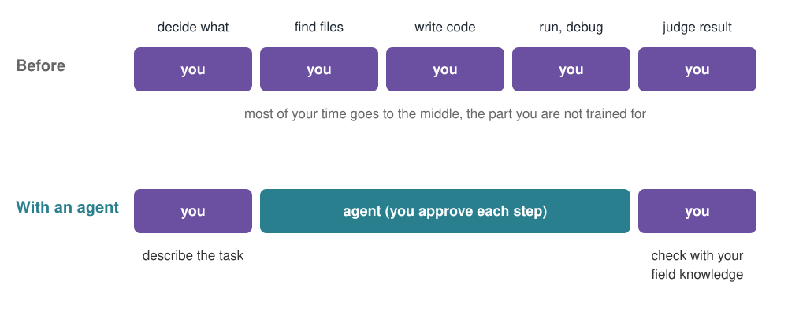
Domain expertise matters more, not less
The agent can tell that a script ran. Only you can tell whether the result is right.
| The agent says | What only a domain expert notices |
|---|---|
| “Merged High into high.” | Those plants were under a different lamp. |
| “Removed 3 outliers above 3 SD.” | The outliers are the responders, the interesting ones. |
| “Plotted mean expression per group.” | This assay needs a log scale; the mean hides everything. |
| “Summarised the survey: students liked the course.” | The question was worded so that most answered yes. |
| “Converted all doses to mg.” | Two papers report mg/kg; the conversion is wrong. |
Describing the task well is a skill you can learn
Vague: > Make a nice plot of my data.Better: > Plot mean seedling height (mm) per light treatment over days,
with ± 1 standard error. Use R and ggplot2, save the script as
plot_growth.R. There should be exactly three treatments. If the
data disagree, stop and tell me before changing anything.- The better prompt says what, how, what the result should look like, and when to stop and ask.
- First delegations gives you practice; Delegating well (Part 2) makes it systematic.
Where this goes wrong
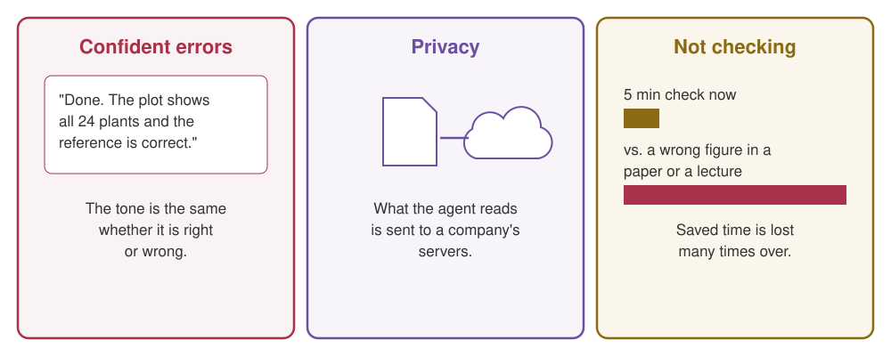
- Confident errors: invented references, silent shortcuts, a “Done” when it is not done.
- Privacy: whatever the agent reads goes to the provider’s servers.
- Cost of not checking: a wrong figure in a lecture or a paper costs far more than the minutes you saved.
Until the privacy unit, use only example data
- Everything in Part 1 uses synthetic or public example data, supplied by the course.
- Do not point an agent at your home folder, your email, or a folder with student or patient data.
- Work in a dedicated project folder, ideally on a copy of the files.
- Privacy, ethics and safety (end of Part 1) covers what may be sent, GDPR, university rules and AI disclosure. Only then do you choose your own project.
The course has five parts and one project that runs through them
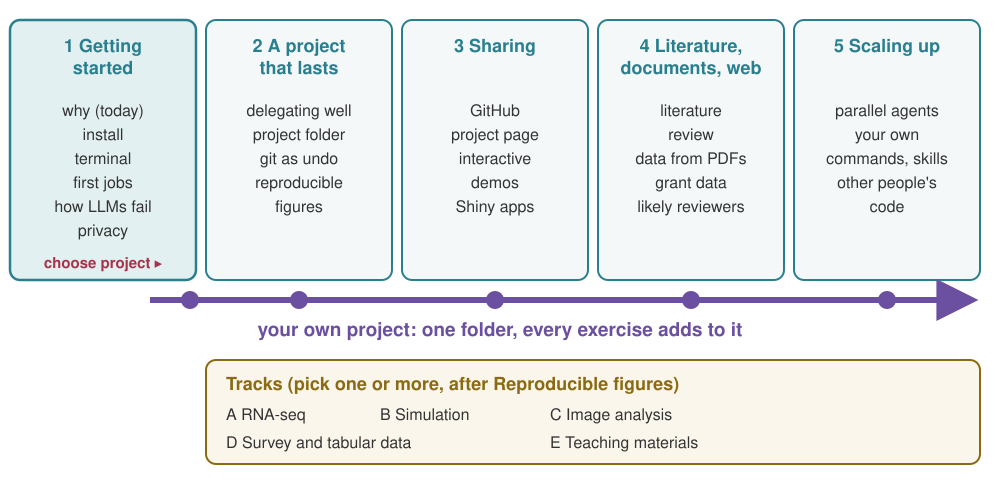
You choose your own project at the end of Part 1
- There is no capstone. Instead, one own project runs through every exercise from Part 2 on.
- Each exercise has a worked example on shared data and an on your own project part.
- Good projects: a course page, a reproducible analysis, a literature map, a cleaned dataset for deposit.
- No idea yet? There is a list of example projects. You may also switch later.
Today’s second exercise task, sorting your own chores, is the first step towards choosing.
Today’s exercise: watch an agent work, then sort your own chores
- Read an annotated agent session (no installation needed). The agent turns
seedlings.csvinto a plot, makes a mistake, notices it and asks for permission. Answer: where did it read files, where did it ask, what did it check, and what would you check? - List five chores from your own job and place them on the grid: how easy is the result to check, and how sensitive is the data?
You keep: your annotated answers and your chore grid. You need the grid at the end of Part 1.
Summary
| Concept | Key fact |
|---|---|
| Chat window | Gives you text; you copy, paste, run and debug. It never sees your files. |
| Coding agent | A language model that works in a folder on your computer: reads, writes, runs, checks. |
| What you get | Ordinary files you keep: scripts, figures, tables, pages. Rerun instead of re-ask. |
| The loop | Goal → plan → act with tools → look at the result → repeat → report. |
| Permission prompts | The agent asks before steps outside the limits you set. Read them; you can say no. |
| Claude Code / Codex | Two similar tools (Anthropic / OpenAI). The course teaches both; skills transfer. |
| Your role | Describe the task, judge the result. Domain expertise matters more, not less. |
| Limits | Confident errors, privacy, and the cost of not checking. Example data only until the privacy unit. |
| Own project | Chosen at the end of Part 1; runs through every later exercise. |
Next (Accounts and installation): get a Claude or ChatGPT account that includes the agent, install Claude Code and/or Codex, and say hello to it in a terminal.